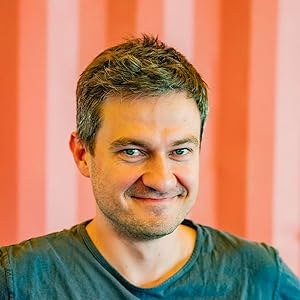
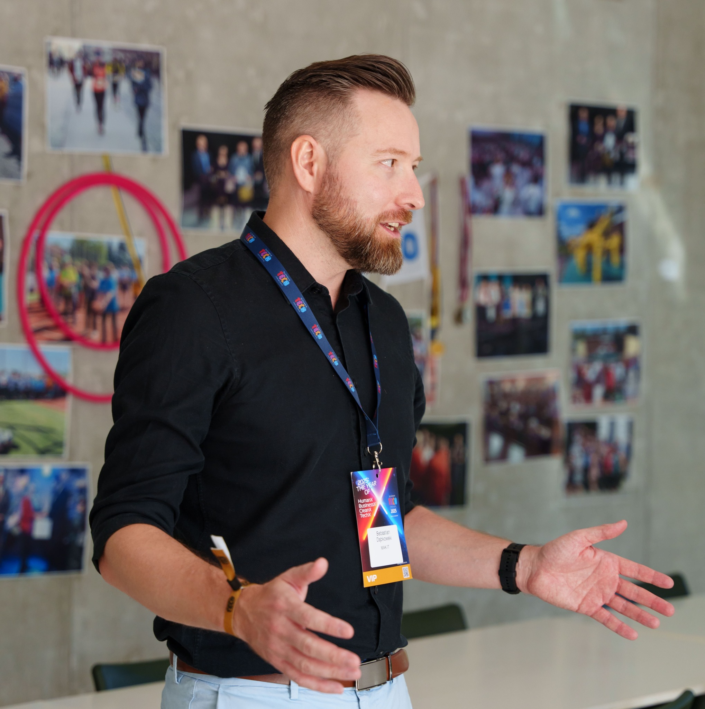
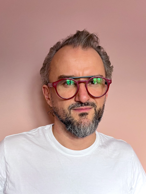
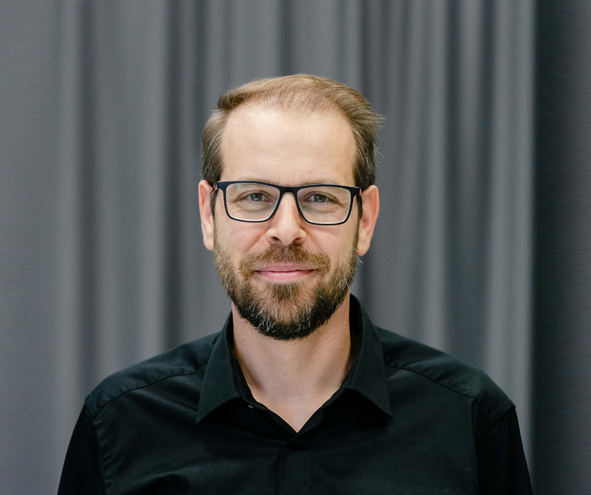
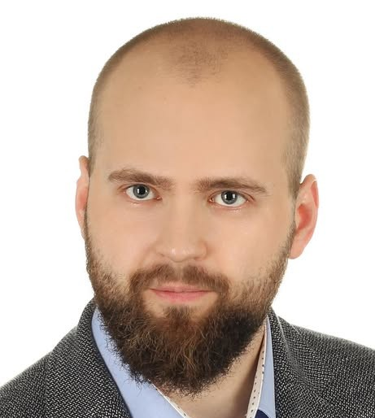
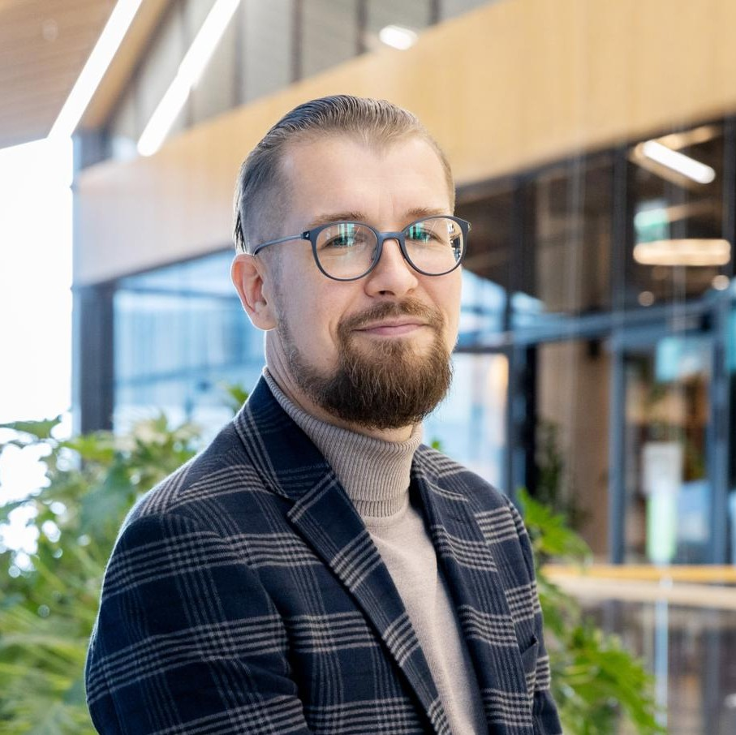
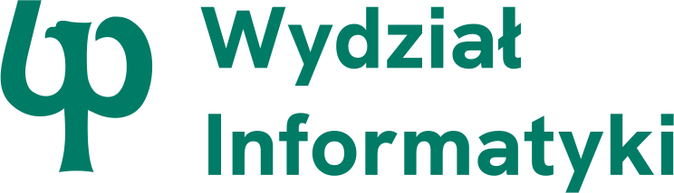
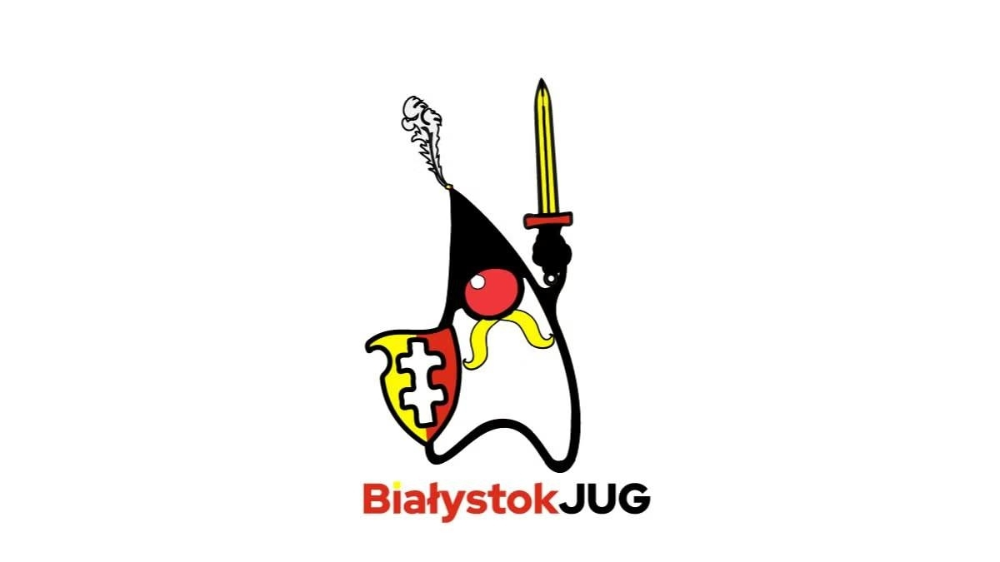
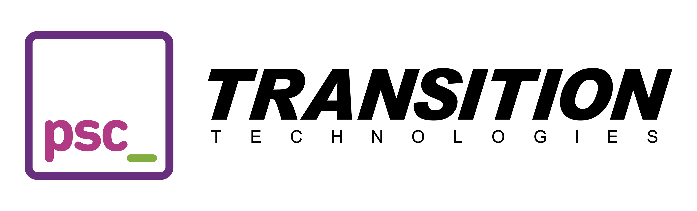

06.12.2025 · Białystok
ProgramAIstok 2025
Kurz opadł. Hypemani i sceptycy wyprodukowali już swoje tysiące postów na Linkedinie, a kursy o AI poszły jak swieże bułeczki, także kto miał zarobić to zarobił.
To co, porozmawiamy sobie bez emocji ale merytorycznie ? Skonfrontujemy doświadczenia ekspertów branży ? Technicznych CEO i founderów , CTO i data analityków? Sprawdzimy gdzie i jak komu AI w programowaniu się sprawdza, a na jakich obietnicach doskonałości AI już się zdążyliśmy przejechać ?
Porozmawiamy o zagrożeniach nie tylko słabej jakości odpowiedzi ale też korzystania z AI w cloudzie? Damy się pochwalić tym którym AI w pracy faktycznie pomaga i to mocno? Pogdybamy czy aktualny pricing większości LLMów to cisza przed burzą?
Rezerwujcie datę 06.12.2025 i widzimy się na Politechnice.
Rozkład jazdy: ⏱️
-
Dzieńdobry programistok!
9:00 - 9:10
-
Piotr Tynecki
“AI a open source”
9:10 -9:45
-
Przerwa ⏱️
9:45 - 9:55
-
Sebastian Dąbkowski
“AI w architekturze i programowaniu”
9:55 - 10:30
-
Przerwa ⏱️
10:30 - 10:45
-
Maciek Lotkowski
“Software development is dead. Long live software development!”
10:45 - 11:20
-
Przerwa ⏱️
11:20 - 11:30
-
Kamil Sijko & Łukasz Wałejko
“AI – od przewagi do zależności. Czego nauczyliśmy się w TTSI przy wdrażaniu systemów wysokiego ryzyka?”
11:30 - 12:15
-
Przerwa obiadowa 🍽️
12:15 -14:00
-
Artur Czemiel
“Mogę w końcu sobie wszystkie głupie pomysły zrealizować”
14:00 - 14:35
-
Przerwa ⏱️
14:35 - 14:45
-
Rafał Camlet
“Moje małe potworki”
14:45 - 15:20
-
Przerwa ⏱️
15:20 - 15:30
-
Piotr Janiak
“Mój wielojęzyczny asystent: jak AI pomaga mi prototypować w dowolnym stacku”
15:30 - 16:05
-
Przerwa ⏱️
16:05 - 16:15
-
Wojtek Łaguna
TBA
16:15 - 16:50
-
Przerwa ⏱️
16:50 - 17:05
-
Panel dyskusyjny
17:05 - 19:05
-
After Party 🥳
20:00
Prelegenci 👤
-

Artur Czemiel
Fullstack Developer
Doświadczony FullStack developer i autor narzędzi GraphQL Zeus oraz Axolotl. Jest znany w społeczności programistów jako prelegent i innowator, wcześniej pracował w branży VFX, a także opatentował algorytm ważenia małych obiektów przy użyciu smartfona.
Więcej → -

Piotr Tynecki
AI Engineer & Python Developer
Doświadczony programista i inżynier SI. Jest dobrze znany w polskiej społeczności Pythona. Jedni kojarzą go z organizacji PyStok, największej grupy użytkowników Pythona i AI w Polsce Północno-Wschodniej, inni jako prelegenta popularyzującego zastosowania AI w praktyce.
Więcej → -

Sebastian Dąbkowski
Software Architect & .NET Expert
Architekt oprogramowania z ponad 15-letnim doświadczeniem w technologii .NET. Łączy inżynierską precyzję z pragmatycznym podejściem do biznesu, projektując systemy, które realnie wspierają cele organizacji. Pasjonuje się automatyzacją i wykorzystaniem AI w procesach wytwarzania oprogramowania.
Więcej → -

Maciej Lotkowski
Serial Founder & CTO
Serial founder i CTO z ponad 20-letnim doświadczeniem. Inżynier Gadu-Gadu, pierwszy CTO w Jobandtalent i twórca Jobartis, jednego z największych portali pracy w Afryce Subsaharyjskiej. Pasjonat niszowych technologii, hackathonów zero knowledge i AI.
Więcej → -

Piotr Janiak
CTO & System Architect
CTO w BIM ALLY LTD., architekt systemów i pasjonat AI, który traktuje modele językowe jak wspólników w prototypowaniu. Łączy różne technologie – od JavaScriptu po Pythona – by szybciej tworzyć rozwiązania dla biznesu. A gdy akurat nie koduje, najpewniej śmiga na jednym ze swoich kilku rowerów.
Więcej → -

Łukasz Wałejko
AI Engineer & Medical Technologist
Lekarz z wykształcenia, programista z wyboru. Od dekady łączy świat medycyny i technologii, tworząc oprogramowanie w wielu językach – od Pythona po Rust. W Transition Technologies Science rozwija narzędzia dla medycyny cyfrowej i open source’owy projekt Trapper wspierający naukowców w analizie zdjęć z fotopułapek.
Więcej → -

Kamil Sijko
Data Science & AI Leader
Lider danych i AI w Moderna, gdzie łączy analitykę z zarządzaniem projektami badawczymi. Wcześniej kierował zespołem Clinical Data Science w Transition Technologies Science, wdrażając rozwiązania AI w medycynie i energetyce. Współorganizator R Users Warsaw i globalnej konferencji UseR! 2026.
Więcej → -

Rafał Camlet
CTO & Software Engineer
Z wykształcenia biolog, z zawodu programista i CTO w 2N IT. Zagorzały rubista i miłośnik Vima, stawia na automatyzację i doskonalenie kodu. Z pasją rozwija oprogramowanie i od czasu do czasu dzieli się doświadczeniem jako prelegent Białystok Ruby Users Group.
Więcej → - Soon...
Partnerzy 🫶

- 
-

- 
Sponsorzy 💰
- 
Czym jest Programistok?
Programistok to społeczność i idea.
Społeczność składająca się z programistów, project managerów, testerów, założycieli firm* oraz wszystkich innych ambitnych osób z szeroko pojętego IT. To ludzie, firmy, uczelnie i organizacje.
Naszą wspólną misją jest integracja społeczności podlaskich programistów (bez podziału na technologie) oraz wyraźne zaznaczenie, że podlaskie IT ma się dobrze i jest jednym z wyraźniejszych punktów na mapie Polski i Europy, jeśli chodzi o zakres kompetencji i portfolio.
Technologicznie agnostyczne prezentacje skupiające się na wyzwaniach architektur systemowych czy zmian w branży od lat przyciągają do naszej społeczności największe umysły technologiczne na Podlasiu (i nie tylko).
Kolejnym celem naszej społeczności jest integracja środowiska technologicznego z lokalnym biznesem, który dzięki dostępowi do szerokiego grona ekspertów będzie w stanie odnaleźć się w dynamicznie zmieniającym się świecie i konkurować zarówno z rozwijającym się Wschodem, jak i pełnym kapitału Zachodem.
*„Założyciele firm” — określenie stosowane na Podlasiu, będące synonimem słowa „Founderzy” (słowo używane w Słowiańskiej Warszawie od setek lat, razem z lunchem i dyniową podwójną Latte Macchiato na mleku sojowym ☕).